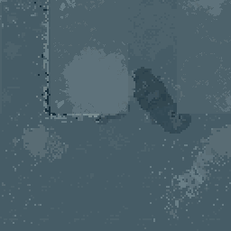
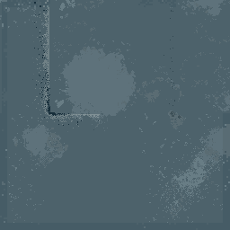
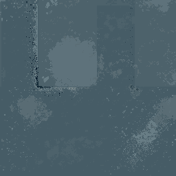
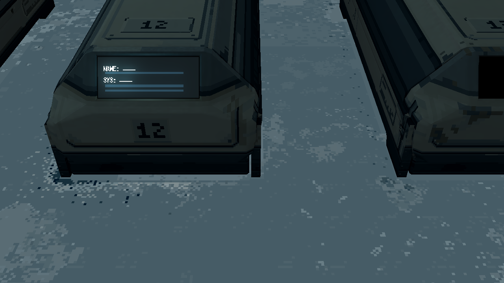
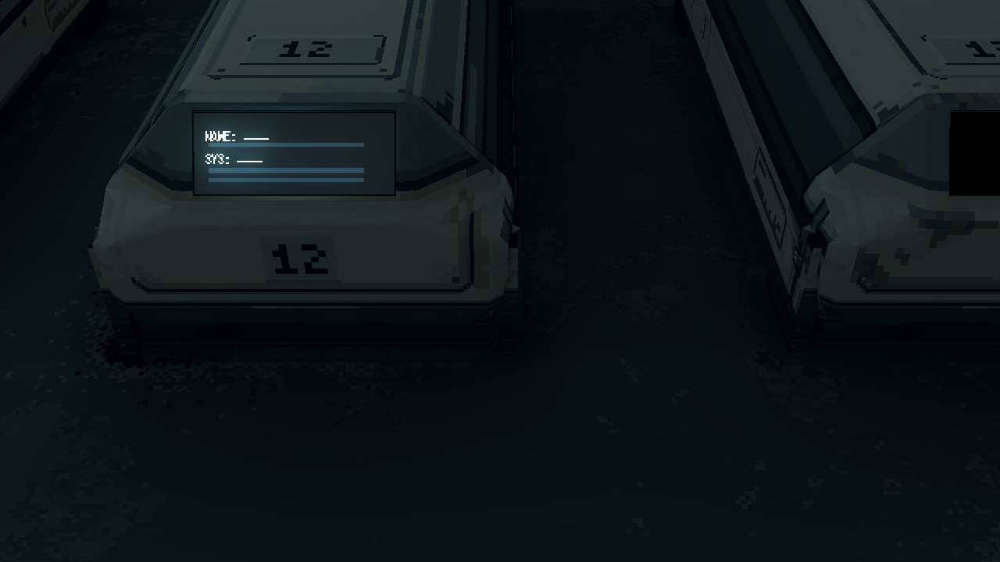

只比较 P12／P13 舱边与邻近空地的一块 3.2×3.2m 地坪。四墙维持已认可 r24；模型、布局、灯、地面其余区域不改。
当前观察：正常暗光下整体差异较弱，改善主要在床脚细碎过渡；可切换“原色材质诊断”分开查看贴图和光照影响。本轮仍是局部待选。
A 是当前 r22 地板；B 在同一区域恢复 r15 原始密度，仅作诊断；C 是 PixelLab 原生 256px 新返修，不再放大像素。不增加砖缝、路线、漏液位置或黄褐色沉积。
制作与范围 · 候选 Aseprite 母版 · 局部不变性 · 运行验证



边界8px与实际舱底遮罩区域精确保留当前像素，用于保护已有配准；黑遮罩内 PixelLab 原始输出中的其他图形完全未使用。仅白遮罩内整片替换，不叠旧做旧层。原色／无遮挡诊断还会显示舱底保护区的旧像素轮廓；正常游戏图保持完整舱体，用于检查真实可见接触。B/C仍为局部待审，不推广全室。

